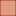

<!doctype html>
<html lang="en">
    <head>
        <meta charset="utf-8">
        <meta http-equiv="X-UA-Compatible" content="IE=edge">
        <meta name="viewport" content="initial-scale=1,user-scalable=no,maximum-scale=1,width=device-width">
        <meta name="mobile-web-app-capable" content="yes">
        <meta name="apple-mobile-web-app-capable" content="yes">
        <link rel="stylesheet" href="css/leaflet.css">
        <link rel="stylesheet" href="css/qgis2web.css"><link rel="stylesheet" href="css/fontawesome-all.min.css">
        <link rel="stylesheet" href="css/leaflet-measure.css">
        <style>
        html, body, #map {
            width: 100%;
            height: 100%;
            padding: 0;
            margin: 0;
        }
        </style>
        <title></title>
    </head>
    <body>
        <div id="map">
        </div>
        <script src="js/qgis2web_expressions.js"></script>
        <script src="js/leaflet.js"></script>
        <script src="js/leaflet-svg-shape-markers.min.js"></script>
        <script src="js/leaflet.rotatedMarker.js"></script>
        <script src="js/leaflet.pattern.js"></script>
        <script src="js/leaflet-hash.js"></script>
        <script src="js/Autolinker.min.js"></script>
        <script src="js/rbush.min.js"></script>
        <script src="js/labelgun.min.js"></script>
        <script src="js/labels.js"></script>
        <script src="js/leaflet-measure.js"></script>
        <script src="data/BatasAdministrasiSleman_1.js"></script>
        <script src="data/PetaKerawananBencana_2.js"></script>
        <script src="data/PEMUKIMAN_AR_25K_3.js"></script>
        <script src="data/JALAN_LN_25K_4.js"></script>
        <script src="data/TitikEvakuasi_5.js"></script>
        <script src="data/LokasiWisata_6.js"></script>
        <script src="data/TitikGunungMerapi_7.js"></script>
        <script src="data/RUTEEVAKUASI_8.js"></script>
        <script>
        var map = L.map('map', {
            zoomControl:true, maxZoom:28, minZoom:1
        })
        var hash = new L.Hash(map);
        map.attributionControl.setPrefix('<a href="https://github.com/tomchadwin/qgis2web" target="_blank">qgis2web</a> &middot; <a href="https://leafletjs.com" title="A JS library for interactive maps">Leaflet</a> &middot; <a href="https://qgis.org">QGIS</a>');
        var autolinker = new Autolinker({truncate: {length: 30, location: 'smart'}});
        var measureControl = new L.Control.Measure({
            position: 'topleft',
            primaryLengthUnit: 'meters',
            secondaryLengthUnit: 'kilometers',
            primaryAreaUnit: 'sqmeters',
            secondaryAreaUnit: 'hectares'
        });
        measureControl.addTo(map);
        document.getElementsByClassName('leaflet-control-measure-toggle')[0]
        .innerHTML = '';
        document.getElementsByClassName('leaflet-control-measure-toggle')[0]
        .className += ' fas fa-ruler';
        var bounds_group = new L.featureGroup([]);
        function setBounds() {
            if (bounds_group.getLayers().length) {
                map.fitBounds(bounds_group.getBounds());
            }
        }
        map.createPane('pane_GoogleSatellite_0');
        map.getPane('pane_GoogleSatellite_0').style.zIndex = 400;
        var layer_GoogleSatellite_0 = L.tileLayer('https://mt1.google.com/vt/lyrs=s&x={x}&y={y}&z={z}', {
            pane: 'pane_GoogleSatellite_0',
            opacity: 1.0,
            attribution: '',
            minZoom: 1,
            maxZoom: 28,
            minNativeZoom: 0,
            maxNativeZoom: 19
        });
        layer_GoogleSatellite_0;
        map.addLayer(layer_GoogleSatellite_0);
        function pop_BatasAdministrasiSleman_1(feature, layer) {
            var popupContent = '<table>\
                    <tr>\
                        <th scope="row">WADMKC</th>\
                        <td>' + (feature.properties['WADMKC'] !== null ? autolinker.link(feature.properties['WADMKC'].toLocaleString()) : '') + '</td>\
                    </tr>\
                    <tr>\
                        <th scope="row">WADMKK</th>\
                        <td>' + (feature.properties['WADMKK'] !== null ? autolinker.link(feature.properties['WADMKK'].toLocaleString()) : '') + '</td>\
                    </tr>\
                    <tr>\
                        <th scope="row">WADMPR</th>\
                        <td>' + (feature.properties['WADMPR'] !== null ? autolinker.link(feature.properties['WADMPR'].toLocaleString()) : '') + '</td>\
                    </tr>\
                </table>';
            layer.bindPopup(popupContent, {maxHeight: 400});
        }

        function style_BatasAdministrasiSleman_1_0() {
            return {
                pane: 'pane_BatasAdministrasiSleman_1',
                opacity: 1,
                color: 'rgba(128,14,16,1.0)',
                dashArray: '',
                lineCap: 'butt',
                lineJoin: 'miter',
                weight: 1.0, 
                fill: true,
                fillOpacity: 1,
                fillColor: 'rgba(216,127,86,1.0)',
                interactive: true,
            }
        }
        map.createPane('pane_BatasAdministrasiSleman_1');
        map.getPane('pane_BatasAdministrasiSleman_1').style.zIndex = 401;
        map.getPane('pane_BatasAdministrasiSleman_1').style['mix-blend-mode'] = 'normal';
        var layer_BatasAdministrasiSleman_1 = new L.geoJson(json_BatasAdministrasiSleman_1, {
            attribution: '',
            interactive: true,
            dataVar: 'json_BatasAdministrasiSleman_1',
            layerName: 'layer_BatasAdministrasiSleman_1',
            pane: 'pane_BatasAdministrasiSleman_1',
            onEachFeature: pop_BatasAdministrasiSleman_1,
            style: style_BatasAdministrasiSleman_1_0,
        });
        bounds_group.addLayer(layer_BatasAdministrasiSleman_1);
        map.addLayer(layer_BatasAdministrasiSleman_1);
        function pop_PetaKerawananBencana_2(feature, layer) {
            var popupContent = '<table>\
                    <tr>\
                        <th scope="row">Total</th>\
                        <td>' + (feature.properties['Total'] !== null ? autolinker.link(feature.properties['Total'].toLocaleString()) : '') + '</td>\
                    </tr>\
                    <tr>\
                        <td colspan="2"><strong>Tingkat </strong><br />' + (feature.properties['Tingkat '] !== null ? autolinker.link(feature.properties['Tingkat '].toLocaleString()) : '') + '</td>\
                    </tr>\
                </table>';
            layer.bindPopup(popupContent, {maxHeight: 400});
        }

        function style_PetaKerawananBencana_2_0(feature) {
            if (feature.properties['Total'] >= 11.000000 && feature.properties['Total'] <= 15.000000 ) {
                return {
                pane: 'pane_PetaKerawananBencana_2',
                opacity: 1,
                color: 'rgba(35,35,35,1.0)',
                dashArray: '',
                lineCap: 'butt',
                lineJoin: 'miter',
                weight: 1.0, 
                fill: true,
                fillOpacity: 1,
                fillColor: 'rgba(33,207,33,1.0)',
                interactive: true,
            }
            }
            if (feature.properties['Total'] >= 15.000000 && feature.properties['Total'] <= 19.000000 ) {
                return {
                pane: 'pane_PetaKerawananBencana_2',
                opacity: 1,
                color: 'rgba(35,35,35,1.0)',
                dashArray: '',
                lineCap: 'butt',
                lineJoin: 'miter',
                weight: 1.0, 
                fill: true,
                fillOpacity: 1,
                fillColor: 'rgba(239,230,53,1.0)',
                interactive: true,
            }
            }
            if (feature.properties['Total'] >= 19.000000 && feature.properties['Total'] <= 24.000000 ) {
                return {
                pane: 'pane_PetaKerawananBencana_2',
                opacity: 1,
                color: 'rgba(35,35,35,1.0)',
                dashArray: '',
                lineCap: 'butt',
                lineJoin: 'miter',
                weight: 1.0, 
                fill: true,
                fillOpacity: 1,
                fillColor: 'rgba(215,45,19,1.0)',
                interactive: true,
            }
            }
        }
        map.createPane('pane_PetaKerawananBencana_2');
        map.getPane('pane_PetaKerawananBencana_2').style.zIndex = 402;
        map.getPane('pane_PetaKerawananBencana_2').style['mix-blend-mode'] = 'normal';
        var layer_PetaKerawananBencana_2 = new L.geoJson(json_PetaKerawananBencana_2, {
            attribution: '',
            interactive: true,
            dataVar: 'json_PetaKerawananBencana_2',
            layerName: 'layer_PetaKerawananBencana_2',
            pane: 'pane_PetaKerawananBencana_2',
            onEachFeature: pop_PetaKerawananBencana_2,
            style: style_PetaKerawananBencana_2_0,
        });
        bounds_group.addLayer(layer_PetaKerawananBencana_2);
        map.addLayer(layer_PetaKerawananBencana_2);
        function pop_PEMUKIMAN_AR_25K_3(feature, layer) {
        }

        function style_PEMUKIMAN_AR_25K_3_0() {
            return {
                pane: 'pane_PEMUKIMAN_AR_25K_3',
                opacity: 1,
                color: 'rgba(35,35,35,1.0)',
                dashArray: '',
                lineCap: 'butt',
                lineJoin: 'miter',
                weight: 1.0, 
                fill: true,
                fillOpacity: 1,
                fillColor: 'rgba(190,207,80,1.0)',
                interactive: false,
            }
        }
        map.createPane('pane_PEMUKIMAN_AR_25K_3');
        map.getPane('pane_PEMUKIMAN_AR_25K_3').style.zIndex = 403;
        map.getPane('pane_PEMUKIMAN_AR_25K_3').style['mix-blend-mode'] = 'normal';
        var layer_PEMUKIMAN_AR_25K_3 = new L.geoJson(json_PEMUKIMAN_AR_25K_3, {
            attribution: '',
            interactive: false,
            dataVar: 'json_PEMUKIMAN_AR_25K_3',
            layerName: 'layer_PEMUKIMAN_AR_25K_3',
            pane: 'pane_PEMUKIMAN_AR_25K_3',
            onEachFeature: pop_PEMUKIMAN_AR_25K_3,
            style: style_PEMUKIMAN_AR_25K_3_0,
        });
        bounds_group.addLayer(layer_PEMUKIMAN_AR_25K_3);
        map.addLayer(layer_PEMUKIMAN_AR_25K_3);
        function pop_JALAN_LN_25K_4(feature, layer) {
        }

        function style_JALAN_LN_25K_4_0() {
            return {
                pane: 'pane_JALAN_LN_25K_4',
                opacity: 1,
                color: 'rgba(255,158,1,1.0)',
                dashArray: '',
                lineCap: 'square',
                lineJoin: 'bevel',
                weight: 1,
                fillOpacity: 0,
                interactive: false,
            }
        }
        map.createPane('pane_JALAN_LN_25K_4');
        map.getPane('pane_JALAN_LN_25K_4').style.zIndex = 404;
        map.getPane('pane_JALAN_LN_25K_4').style['mix-blend-mode'] = 'normal';
        var layer_JALAN_LN_25K_4 = new L.geoJson(json_JALAN_LN_25K_4, {
            attribution: '',
            interactive: false,
            dataVar: 'json_JALAN_LN_25K_4',
            layerName: 'layer_JALAN_LN_25K_4',
            pane: 'pane_JALAN_LN_25K_4',
            onEachFeature: pop_JALAN_LN_25K_4,
            style: style_JALAN_LN_25K_4_0,
        });
        bounds_group.addLayer(layer_JALAN_LN_25K_4);
        map.addLayer(layer_JALAN_LN_25K_4);
        function pop_TitikEvakuasi_5(feature, layer) {
            var popupContent = '<table>\
                    <tr>\
                        <td colspan="2"><strong>Nama</strong><br />' + (feature.properties['Nama'] !== null ? autolinker.link(feature.properties['Nama'].toLocaleString()) : '') + '</td>\
                    </tr>\
                    <tr>\
                        <th scope="row">Kecamatan</th>\
                        <td>' + (feature.properties['Kecamatan'] !== null ? autolinker.link(feature.properties['Kecamatan'].toLocaleString()) : '') + '</td>\
                    </tr>\
                </table>';
            layer.bindPopup(popupContent, {maxHeight: 400});
        }

        function style_TitikEvakuasi_5_0() {
            return {
                pane: 'pane_TitikEvakuasi_5',
                radius: 8.0,
                opacity: 1,
                color: 'rgba(179,93,142,1.0)',
                dashArray: '',
                lineCap: 'butt',
                lineJoin: 'miter',
                weight: 2.0,
                fill: true,
                fillOpacity: 1,
                fillColor: 'rgba(238,30,165,1.0)',
                interactive: true,
            }
        }
        map.createPane('pane_TitikEvakuasi_5');
        map.getPane('pane_TitikEvakuasi_5').style.zIndex = 405;
        map.getPane('pane_TitikEvakuasi_5').style['mix-blend-mode'] = 'normal';
        var layer_TitikEvakuasi_5 = new L.geoJson(json_TitikEvakuasi_5, {
            attribution: '',
            interactive: true,
            dataVar: 'json_TitikEvakuasi_5',
            layerName: 'layer_TitikEvakuasi_5',
            pane: 'pane_TitikEvakuasi_5',
            onEachFeature: pop_TitikEvakuasi_5,
            pointToLayer: function (feature, latlng) {
                var context = {
                    feature: feature,
                    variables: {}
                };
                return L.circleMarker(latlng, style_TitikEvakuasi_5_0(feature));
            },
        });
        bounds_group.addLayer(layer_TitikEvakuasi_5);
        map.addLayer(layer_TitikEvakuasi_5);
        function pop_LokasiWisata_6(feature, layer) {
            var popupContent = '<table>\
                    <tr>\
                        <td colspan="2"><strong>Nama</strong><br />' + (feature.properties['Nama'] !== null ? autolinker.link(feature.properties['Nama'].toLocaleString()) : '') + '</td>\
                    </tr>\
                    <tr>\
                        <th scope="row">Kecamatan</th>\
                        <td>' + (feature.properties['Kecamatan'] !== null ? autolinker.link(feature.properties['Kecamatan'].toLocaleString()) : '') + '</td>\
                    </tr>\
                    <tr>\
                        <th scope="row">Jarak (km)</th>\
                        <td>' + (feature.properties['Jarak (km)'] !== null ? autolinker.link(feature.properties['Jarak (km)'].toLocaleString()) : '') + '</td>\
                    </tr>\
                    <tr>\
                        <th scope="row">._Jalur Terpendek (KM)</th>\
                        <td>' + (feature.properties['._Jalur Terpendek (KM)'] !== null ? autolinker.link(feature.properties['._Jalur Terpendek (KM)'].toLocaleString()) : '') + '</td>\
                    </tr>\
                    <tr>\
                        <th scope="row">._Titik Evakuasi Terdekat</th>\
                        <td>' + (feature.properties['._Titik Evakuasi Terdekat'] !== null ? autolinker.link(feature.properties['._Titik Evakuasi Terdekat'].toLocaleString()) : '') + '</td>\
                    </tr>\
                </table>';
            layer.bindPopup(popupContent, {maxHeight: 400});
        }

        function style_LokasiWisata_6_0() {
            return {
                pane: 'pane_LokasiWisata_6',
                radius: 4.0,
                opacity: 1,
                color: 'rgba(89,155,225,1.0)',
                dashArray: '',
                lineCap: 'butt',
                lineJoin: 'miter',
                weight: 2.0,
                fill: true,
                fillOpacity: 1,
                fillColor: 'rgba(69,166,240,1.0)',
                interactive: true,
            }
        }
        map.createPane('pane_LokasiWisata_6');
        map.getPane('pane_LokasiWisata_6').style.zIndex = 406;
        map.getPane('pane_LokasiWisata_6').style['mix-blend-mode'] = 'normal';
        var layer_LokasiWisata_6 = new L.geoJson(json_LokasiWisata_6, {
            attribution: '',
            interactive: true,
            dataVar: 'json_LokasiWisata_6',
            layerName: 'layer_LokasiWisata_6',
            pane: 'pane_LokasiWisata_6',
            onEachFeature: pop_LokasiWisata_6,
            pointToLayer: function (feature, latlng) {
                var context = {
                    feature: feature,
                    variables: {}
                };
                return L.circleMarker(latlng, style_LokasiWisata_6_0(feature));
            },
        });
        bounds_group.addLayer(layer_LokasiWisata_6);
        map.addLayer(layer_LokasiWisata_6);
        function pop_TitikGunungMerapi_7(feature, layer) {
        }

        function style_TitikGunungMerapi_7_0() {
            return {
                pane: 'pane_TitikGunungMerapi_7',
                shape: 'triangle',
                radius: 12.0,
                opacity: 1,
                color: 'rgba(128,17,25,1.0)',
                dashArray: '',
                lineCap: 'butt',
                lineJoin: 'miter',
                weight: 2.0,
                fill: true,
                fillOpacity: 1,
                fillColor: 'rgba(219,30,42,1.0)',
                interactive: false,
            }
        }
        map.createPane('pane_TitikGunungMerapi_7');
        map.getPane('pane_TitikGunungMerapi_7').style.zIndex = 407;
        map.getPane('pane_TitikGunungMerapi_7').style['mix-blend-mode'] = 'normal';
        var layer_TitikGunungMerapi_7 = new L.geoJson(json_TitikGunungMerapi_7, {
            attribution: '',
            interactive: false,
            dataVar: 'json_TitikGunungMerapi_7',
            layerName: 'layer_TitikGunungMerapi_7',
            pane: 'pane_TitikGunungMerapi_7',
            onEachFeature: pop_TitikGunungMerapi_7,
            pointToLayer: function (feature, latlng) {
                var context = {
                    feature: feature,
                    variables: {}
                };
                return L.shapeMarker(latlng, style_TitikGunungMerapi_7_0(feature));
            },
        });
        bounds_group.addLayer(layer_TitikGunungMerapi_7);
        map.addLayer(layer_TitikGunungMerapi_7);
        function pop_RUTEEVAKUASI_8(feature, layer) {
            var popupContent = '<table>\
                    <tr>\
                        <td colspan="2"><strong>layer</strong><br />' + (feature.properties['layer'] !== null ? autolinker.link(feature.properties['layer'].toLocaleString()) : '') + '</td>\
                    </tr>\
                </table>';
            layer.bindPopup(popupContent, {maxHeight: 400});
        }

        function style_RUTEEVAKUASI_8_0() {
            return {
                pane: 'pane_RUTEEVAKUASI_8',
                opacity: 1,
                color: 'rgba(255,255,255,1.0)',
                dashArray: '',
                lineCap: 'square',
                lineJoin: 'bevel',
                weight: 1.0,
                fillOpacity: 0,
                interactive: false,
            }
        }
        map.createPane('pane_RUTEEVAKUASI_8');
        map.getPane('pane_RUTEEVAKUASI_8').style.zIndex = 408;
        map.getPane('pane_RUTEEVAKUASI_8').style['mix-blend-mode'] = 'normal';
        var layer_RUTEEVAKUASI_8 = new L.geoJson(json_RUTEEVAKUASI_8, {
            attribution: '',
            interactive: false,
            dataVar: 'json_RUTEEVAKUASI_8',
            layerName: 'layer_RUTEEVAKUASI_8',
            pane: 'pane_RUTEEVAKUASI_8',
            onEachFeature: pop_RUTEEVAKUASI_8,
            style: style_RUTEEVAKUASI_8_0,
        });
        bounds_group.addLayer(layer_RUTEEVAKUASI_8);
        map.addLayer(layer_RUTEEVAKUASI_8);
        var baseMaps = {};
        L.control.layers(baseMaps,{' RUTE EVAKUASI': layer_RUTEEVAKUASI_8,' Titik Gunung Merapi': layer_TitikGunungMerapi_7,' Lokasi Wisata': layer_LokasiWisata_6,' Titik Evakuasi ': layer_TitikEvakuasi_5,' JALAN_LN_25K': layer_JALAN_LN_25K_4,' PEMUKIMAN_AR_25K': layer_PEMUKIMAN_AR_25K_3,'Peta Kerawanan Bencana<br /><table><tr><td style="text-align: center;"></td><td>Rendah </td></tr><tr><td style="text-align: center;"></td><td>Sedang</td></tr><tr><td style="text-align: center;"></td><td>Tinggi</td></tr></table>': layer_PetaKerawananBencana_2,' Batas Administrasi Sleman': layer_BatasAdministrasiSleman_1,"Google Satellite": layer_GoogleSatellite_0,}).addTo(map);
        setBounds();
        </script>
    </body>
</html>
